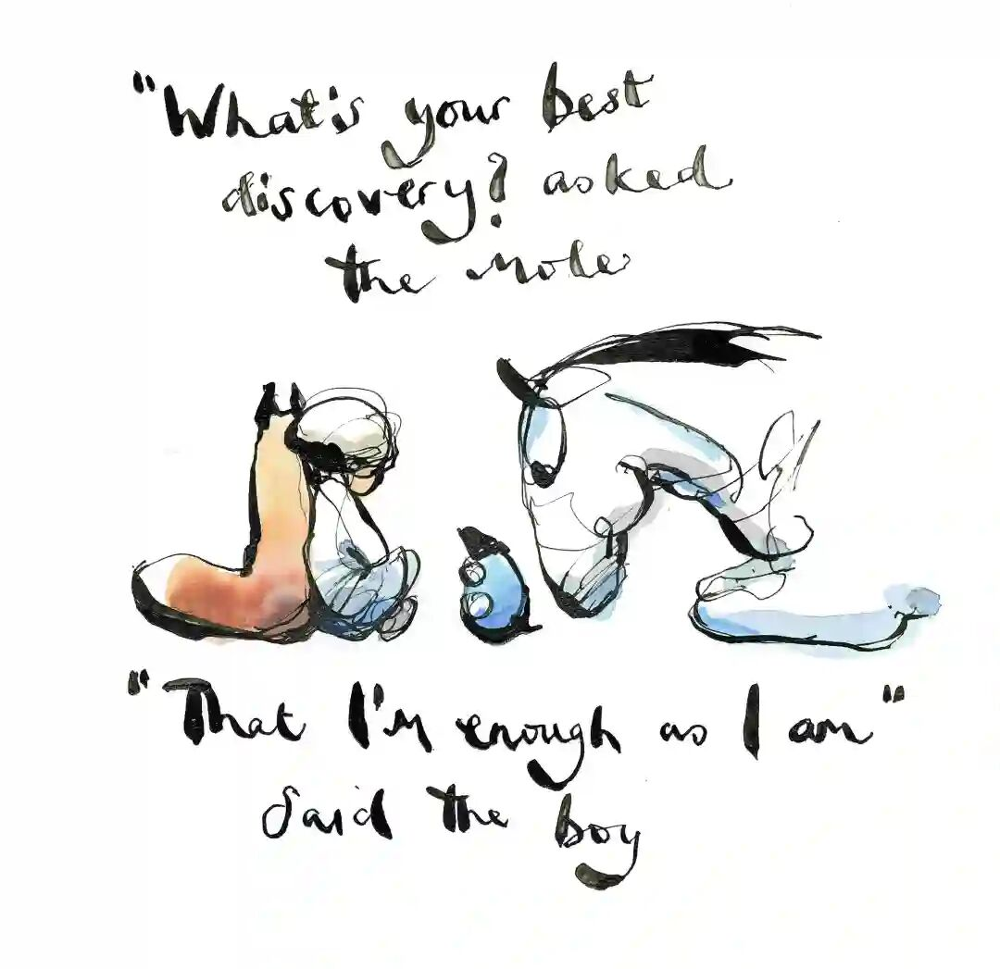
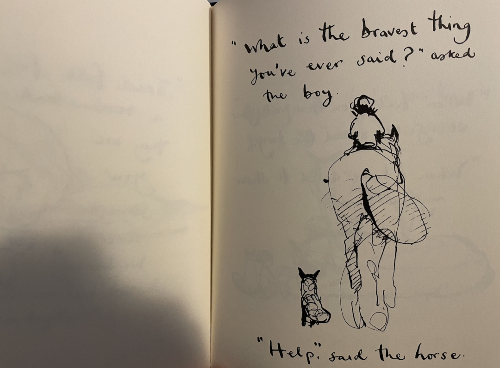
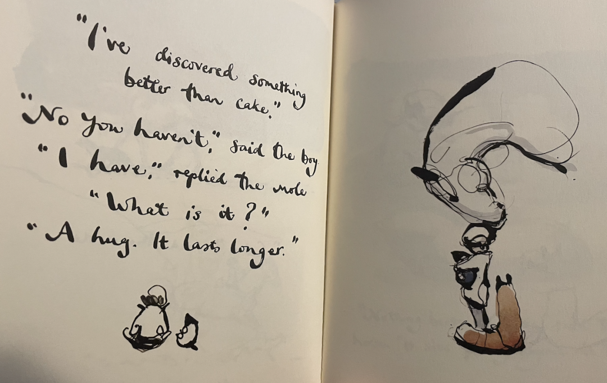
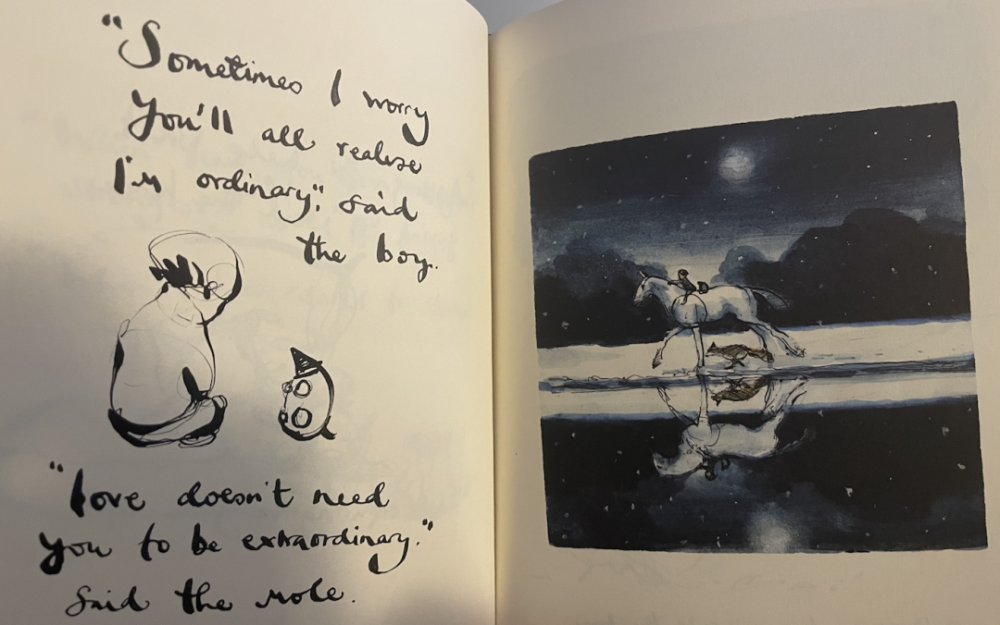
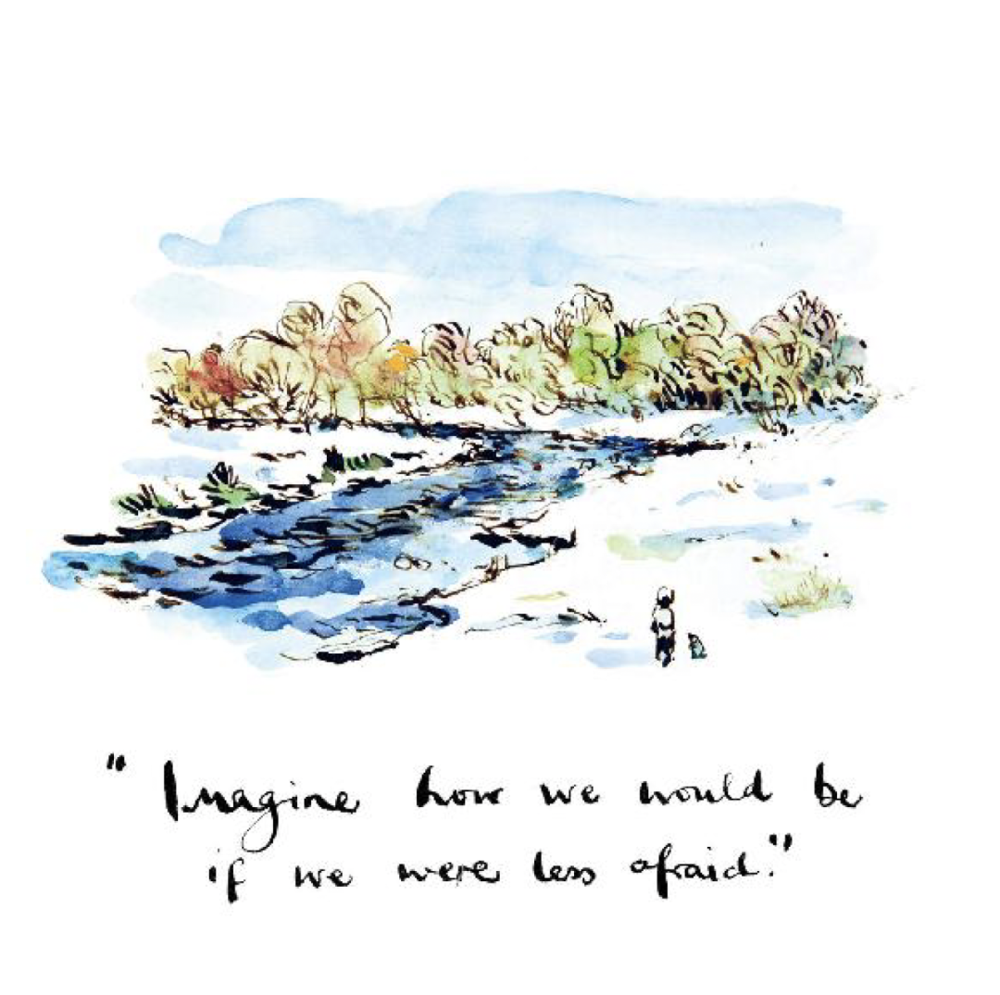
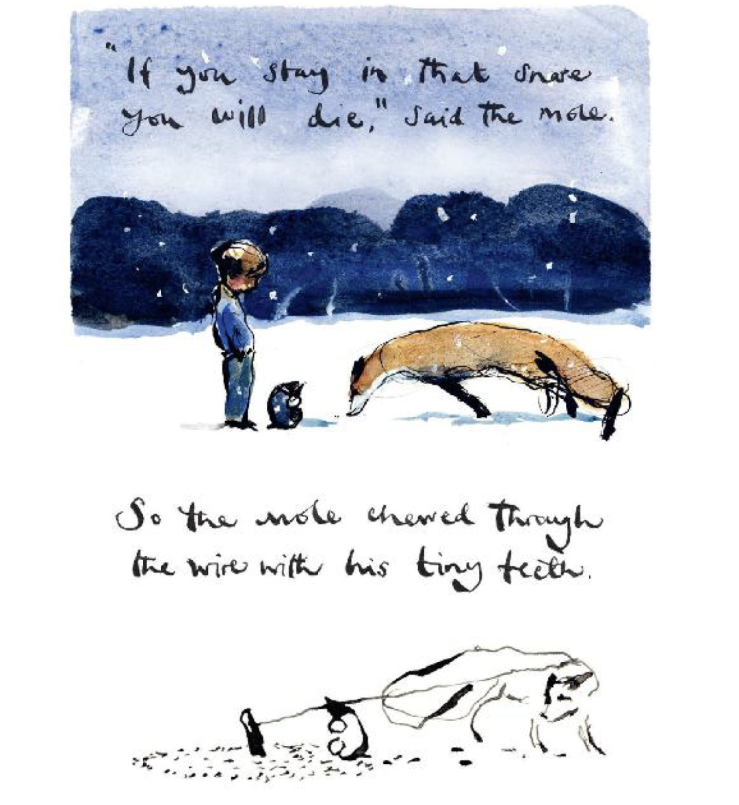
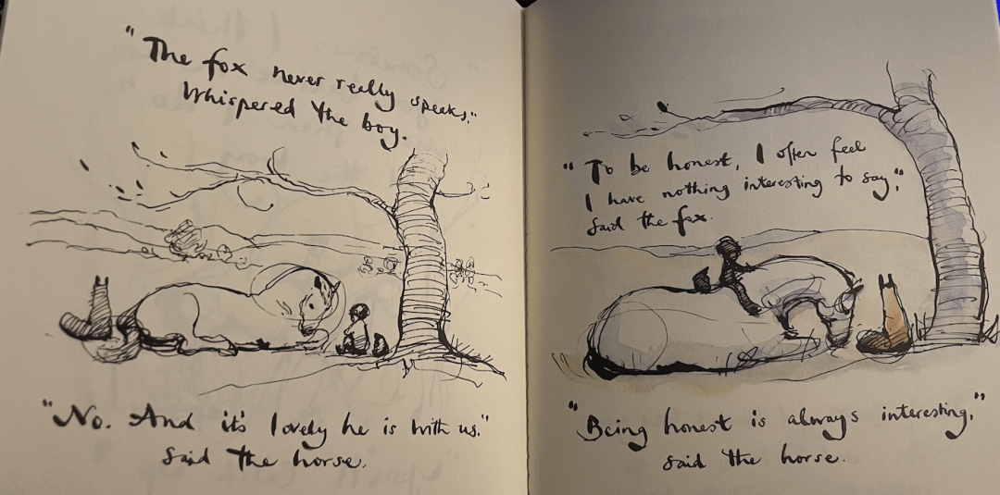
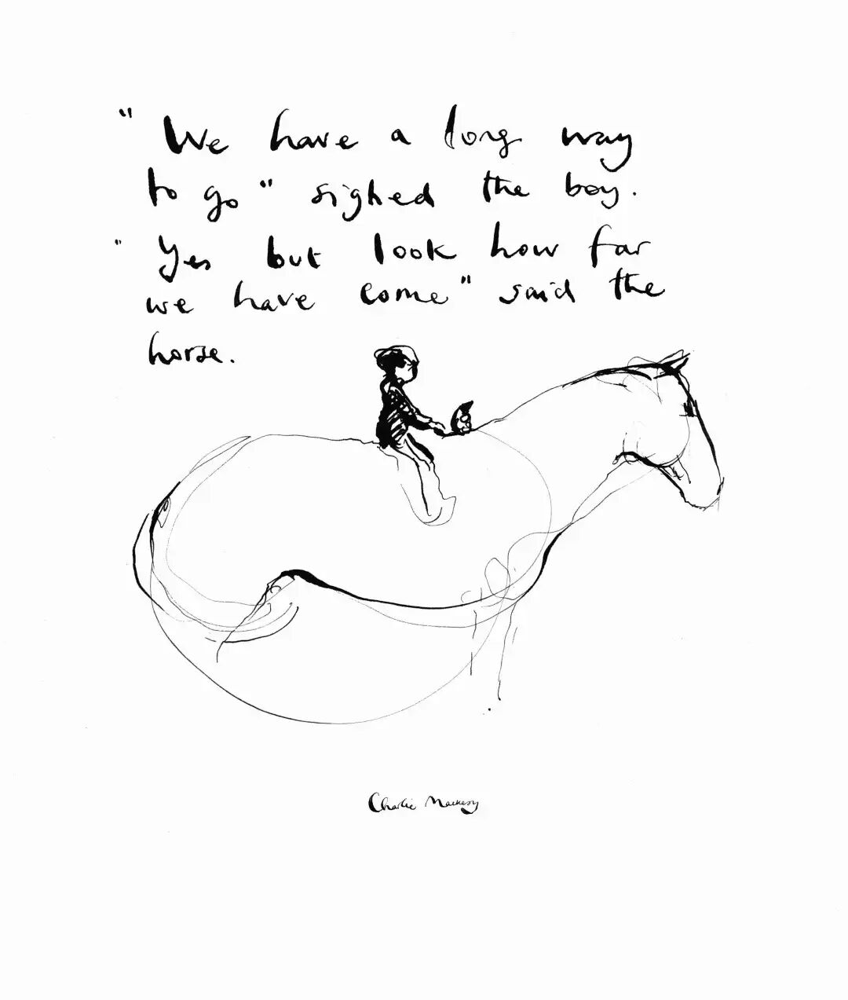

《The Boy, the Mole, the Fox and the Horse》：去爱，也被爱。
“ If there were a class on how to be a good person, this book would be the textbook.








<<< 左右滑动见更多 >>>
起初是在bilibili，看完了全集动画，动画居然荣获奥斯卡大奖，立马就被故事吸引，一口气看完，意犹未尽。
之后几天，找到了绘本原著，一口气翻看完绘本，初次翻阅的时候，立马跟《小王子》产生了极大的共鸣。回到了阅读小王子时的感受。
这是一本老少皆宜书。
This book is for everyone, whether you are eighty or eight - I feel like I'm both sometimes.
在这里并非以年龄大小所说，而是指代人生不同阶段，所表现出对【爱】的定义。
书中有四个角色，可以看做是人一生不同阶段，而我更加喜欢这样理解：人所蕴含的各种思想，在我们身上有各种各样的性格，在某一时刻我们表现出某性格。我相信一个人包含多种品质：善良、真诚、幼稚、贪婪、希望、智慧、憎恶，我们在特定的时刻、特定的人面前，所展露出不同的自己，我们深深的用围墙包裹着内心，借而保护了自己，但也阻碍了内心去释放善意，对自己和所有人；我们始终拥有，并坚信所有的品质都是美好的，To love，and be loved.
我在他们四个找到了自己
Boy：孤独的，充满了各种各样问题，在找回家的路。
Mole：贪婪地想着吃蛋糕。
Fox：大多数时候是安静、警惕的。因为他被生活伤害过。
Horse：书中最大的动物，也是最绅士的，拥有智慧和 “非人” 的能力，但遭受了【其他马】的嫉妒。
◆Here are some of the quotes from this book that struck me as important:
◆在摘录过程中，发现全篇很多话语很优美，简简单单的单词，直直的击中我的内心。
This book is for everyone, whether you are eighty or eight - I feel like I'm both sometimes.
I think the wild is a bit like life - frightening sometimes but beautiful.
The truth is everyone is winging it.
Mole: I'm so small.
Boy: Yes, but you make a huge difference.
Mole: What do you want to be when you grow up?
Boy: Kind.
Do you have a favourite saying?
If at first you don't succeed, have some cake.
Isn't it odd. We can only see our outside, but nearly everything happens on the inside.
Often the hardest person to forgive is yourself.
I think everyone is just trying to get home.
Boy: What is the bravest thing you've ever said?
Horse: Help. Asking for help isn't giving up. It's refusing to give up.
Boy: Sometimes I worry you'll all realize I'm ordinary.
Mole: Love doesn't need you to be extraordinary.
Nothing beats kindness. It sits quietly beyond all things.
The greatest illusion is that life should be perfect.
Fox: To be honest, I often feel I have nothing interesting to say.
Horse: Being honest is always interesting.
Mole: Is your glass half empty or half full?
Boy: I think I'm grateful to have a glass.
Mole: What is your best discovery?
Boy: That I'm enough as I am.
Boy: What do we do when our hearts hurt?
Horse: We wrap them with friendship, shared tears and time, till they wake hopeful and happy again.
Horse: Don't measure how valuable you are by the way you are treated. Always remember you matter, you're important and you are loved. And you bring to this world things no one else can.
“ 长大后的我们总在追问“怎么成功”，却常常忘了那个更简单、也更难的问题——如何做一个善良的人，去爱，也被爱。
那一瞬间，让你想起了曾经的自己？
俗到极致即为雅，雅得过头便是俗——是谓雅俗共赏。